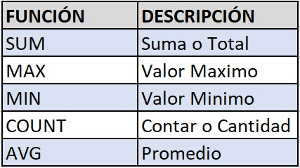

Lecturas - Conceptos Avanzados de Bases de Datos
Funciones de Totalización
Las funciones de totalización (o funciones agregadas) son operaciones que realizan cálculos sobre conjuntos de valores y devuelven un único valor. Estas funciones son fundamentales para el análisis de datos y la generación de informes.
Principales Funciones de Totalización
- COUNT(): Cuenta el número de filas o valores no nulos en una columna.
- SUM(): Calcula la suma de los valores en una columna numérica.
- AVG(): Calcula el promedio de los valores en una columna numérica.
- MAX(): Encuentra el valor máximo en una columna.
- MIN(): Encuentra el valor mínimo en una columna.
Ejemplos de Uso
-- Contar el número total de libros disponibles para una venta
select count(*) from libros;
-- Calcular el promedio del precio de los libros
select avg(precio) from libros;
-- Encontrar el mayor precio de todos los libros
select max(precio) from libros;
Las funciones de totalización son especialmente útiles cuando se combinan con cláusulas GROUP BY, permitiendo realizar cálculos sobre grupos específicos de datos.
Tutoriales Programación YA. (s.f.). Funciones de agregado en MySQL. Tutoriales Programación YA. Recuperado de tutorialesprogramacionya.com